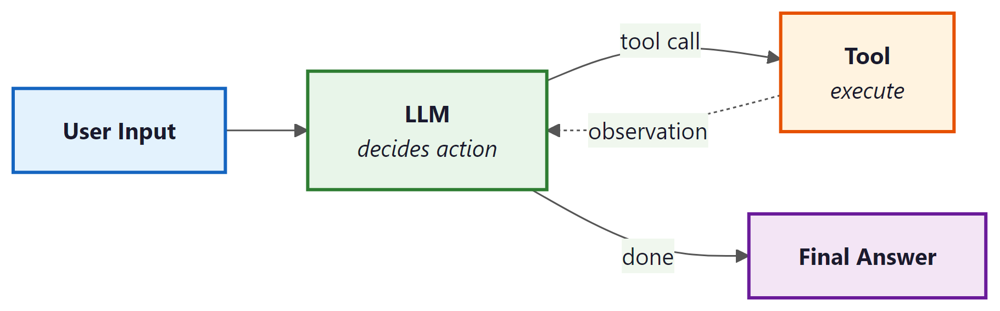

Agents are LLM-powered programs that can use tools to accomplish tasks. Instead of following a fixed chain of steps, an agent observes the current state, decides which tool to call (if any), interprets the result, and repeats until the task is complete. LangChain: Chains, Agents, and Retrieval provides the primitives to define tools, wire them to a model, and run the agent loop. For production-grade agent workflows with branching, cycles, and human-in-the-loop controls, see Appendix M: LangGraph.
1. Defining Tools
A tool is a function that the LLM can choose to call. Each tool has a name, a description (which the model reads to decide when to use it), and a function that executes the action. LangChain: Chains, Agents, and Retrieval provides the @tool decorator for creating tools from ordinary Python functions.
This example defines two custom tools: one that performs a calculation and one that looks up the current weather.
from langchain_core.tools import tool
from typing import Annotated
@tool
def calculate(expression: Annotated[str, "A mathematical expression to evaluate"]) -> str:
"""Evaluate a mathematical expression and return the result.
Use this for any arithmetic or math questions."""
try:
result = eval(expression) # In production, use a safe math parser
return str(result)
except Exception as e:
return f"Error: {e}"
@tool
def get_weather(
city: Annotated[str, "The city name"],
unit: Annotated[str, "Temperature unit: celsius or fahrenheit"] = "celsius"
) -> str:
"""Get the current weather for a city.
Use this when the user asks about weather conditions."""
# In production, this would call a real weather API
return f"The weather in {city} is 22 degrees {unit} and sunny."
# Inspect the tool's schema (this is what the model sees)
print(calculate.name) # "calculate"
print(calculate.description) # "Evaluate a mathematical expression..."
print(calculate.args_schema.schema()) # JSON schema for argumentsWrite clear, specific tool descriptions. The model uses these descriptions to decide which tool to call, so vague descriptions lead to incorrect tool selection. Include examples of when to use (and when not to use) each tool. The docstring becomes the tool's description; type annotations with Annotated become the parameter descriptions.
2. Built-in Tools
LangChain: Chains, Agents, and Retrieval provides pre-built tool integrations for common operations. These save you from writing boilerplate for popular APIs and services.
from langchain_community.tools import DuckDuckGoSearchRun
from langchain_community.tools import WikipediaQueryRun
from langchain_community.utilities import WikipediaAPIWrapper
# Web search via DuckDuckGo (no API key required)
search_tool = DuckDuckGoSearchRun()
result = search_tool.invoke("LangChain: Chains, Agents, and Retrieval framework latest version 2025")
print(result[:200])
# Wikipedia lookup
wiki_tool = WikipediaQueryRun(api_wrapper=WikipediaAPIWrapper(top_k_results=1))
result = wiki_tool.invoke("Transformer neural network architecture")
print(result[:200])3. Creating an Agent with create_tool_calling_agent
The create_tool_calling_agent function creates an agent that uses the model's native tool-calling capability (available in GPT-4o, Claude, Gemini, and others). The model decides which tools to call based on the user's input, and LangChain: Chains, Agents, and Retrieval handles the execution loop via AgentExecutor.
This example creates an agent with access to the calculator and weather tools, then runs it on a multi-step question.
from langchain_openai import ChatOpenAI
from langchain.agents import create_tool_calling_agent, AgentExecutor
from langchain_core.prompts import ChatPromptTemplate, MessagesPlaceholder
# Define the prompt with a placeholder for agent scratchpad
prompt = ChatPromptTemplate.from_messages([
("system", "You are a helpful assistant with access to tools. "
"Use them when needed to answer questions accurately."),
MessagesPlaceholder(variable_name="chat_history", optional=True),
("human", "{input}"),
MessagesPlaceholder(variable_name="agent_scratchpad")
])
# Initialize model and tools
model = ChatOpenAI(model="gpt-4o", temperature=0)
tools = [calculate, get_weather]
# Create the agent
agent = create_tool_calling_agent(model, tools, prompt)
# Wrap in AgentExecutor to handle the tool-call loop
executor = AgentExecutor(
agent=agent,
tools=tools,
verbose=True, # Print each step for debugging
max_iterations=5 # Safety limit on tool-call loops
)
# Run the agent
result = executor.invoke({
"input": "What is the weather in Paris? Also, what is 15% of 847?"
})
print(result["output"])
4. Callbacks and Tracing
Callbacks let you hook into every step of chain and agent execution: model calls, tool invocations, retriever queries, parsing, and errors. LangChain: Chains, Agents, and Retrieval fires callback events at well-defined points in the execution lifecycle, and you can attach handlers to log, monitor, or modify behavior.
This example creates a custom callback handler that logs each step of agent execution.
from langchain_core.callbacks import BaseCallbackHandler
from typing import Any, Dict
class LoggingHandler(BaseCallbackHandler):
"""Logs every LLM call and tool invocation."""
def on_llm_start(self, serialized: Dict[str, Any], prompts: list, **kwargs):
print(f"[LLM START] Model: {serialized.get('id', ['unknown'])}")
def on_llm_end(self, response, **kwargs):
print(f"[LLM END] Tokens used: {response.llm_output}")
def on_tool_start(self, serialized: Dict[str, Any], input_str: str, **kwargs):
print(f"[TOOL START] {serialized.get('name', 'unknown')}: {input_str}")
def on_tool_end(self, output: str, **kwargs):
print(f"[TOOL END] Result: {output[:100]}")
def on_agent_action(self, action, **kwargs):
print(f"[AGENT ACTION] {action.tool}: {action.tool_input}")
def on_agent_finish(self, finish, **kwargs):
print(f"[AGENT FINISH] {finish.return_values}")
# Attach the handler to the executor
result = executor.invoke(
{"input": "What is 2^10?"},
config={"callbacks": [LoggingHandler()]}
)5. LangSmith Tracing
For production observability, LangChain: Chains, Agents, and Retrieval integrates with LangSmith, a hosted tracing and evaluation platform. When enabled, every chain and agent execution is automatically traced with full input/output logging, latency breakdowns, token counts, and error tracking. No code changes are required beyond setting environment variables.
import os
# Enable LangSmith tracing (set these before importing LangChain: Chains, Agents, and Retrieval)
os.environ["LANGCHAIN_TRACING_V2"] = "true"
os.environ["LANGCHAIN_API_KEY"] = "ls__..." # Your LangSmith API key
os.environ["LANGCHAIN_PROJECT"] = "my-agent-app" # Project name in LangSmith
# All subsequent chain/agent invocations are automatically traced.
# View traces at https://smith.langchain.com
# You can also add custom metadata to traces
result = executor.invoke(
{"input": "Summarize the weather in Tokyo"},
config={
"metadata": {"user_id": "user-456", "request_id": "req-789"},
"tags": ["production", "weather-agent"]
}
)LangSmith tracing is invaluable during development and debugging. Enable it early in your project. The free tier is generous enough for development use. In production, use tags and metadata to filter traces by user, session, or feature, making it easy to investigate specific issues.
6. Custom Agent Loops
The AgentExecutor handles the most common agent pattern, but some applications need custom control flow: conditional tool selection, parallel tool calls, human approval before executing certain tools, or complex error recovery. For these cases, you can build a custom agent loop using LangChain: Chains, Agents, and Retrieval's primitives directly.
This example implements a minimal agent loop that gives you full control over the execution cycle.
from langchain_openai import ChatOpenAI
from langchain_core.messages import HumanMessage, AIMessage, ToolMessage
model = ChatOpenAI(model="gpt-4o", temperature=0)
model_with_tools = model.bind_tools([calculate, get_weather])
def run_agent(user_input: str, max_steps: int = 5) -> str:
"""A custom agent loop with full control over execution."""
messages = [HumanMessage(content=user_input)]
tools_map = {"calculate": calculate, "get_weather": get_weather}
for step in range(max_steps):
# Ask the model
response = model_with_tools.invoke(messages)
messages.append(response)
# If no tool calls, we have the final answer
if not response.tool_calls:
return response.content
# Execute each tool call
for tool_call in response.tool_calls:
tool_name = tool_call["name"]
tool_args = tool_call["args"]
print(f"Step {step + 1}: Calling {tool_name}({tool_args})")
# Optional: add approval logic here
# if tool_name == "dangerous_tool":
# approval = input("Approve? (y/n): ")
# if approval != "y":
# continue
# Execute the tool
tool_fn = tools_map[tool_name]
result = tool_fn.invoke(tool_args)
# Add the tool result as a ToolMessage
messages.append(ToolMessage(
content=str(result),
tool_call_id=tool_call["id"]
))
return "Agent reached maximum steps without a final answer."
# Run the custom agent
answer = run_agent("What is the weather in London and what is 42 * 17?")
print(answer)Use AgentExecutor for straightforward tool-calling agents. Use a custom loop (as above) for simple cases where you need one specific customization such as approval gates. For anything involving branching logic, cycles, persistent state, or multi-agent coordination, use LangGraph, which provides a graph-based execution framework built for complex agent architectures.
7. Best Practices for Production Agents
Deploying agents in production requires careful attention to reliability, cost, and safety. The following guidelines apply to all agent implementations, whether you use AgentExecutor, a custom loop, or LangGraph.
| Concern | Recommendation |
|---|---|
| Runaway loops | Set max_iterations (AgentExecutor) or a step counter (custom loop). A typical limit is 5 to 10 iterations. |
| Cost control | Use callback handlers to track token usage per request. Set hard budget limits and abort if exceeded. |
| Tool safety | Validate tool inputs before execution. Never pass user-controlled strings to eval() or shell commands without sanitization. |
| Error handling | Set handle_parsing_errors=True on AgentExecutor. In custom loops, catch tool exceptions and return error messages to the model. |
| Observability | Enable LangSmith tracing in all environments. Tag traces with user and session IDs for debugging. |
| Timeouts | Set max_execution_time on AgentExecutor or use asyncio.wait_for() in async agents. |
LangChain: Chains, Agents, and Retrieval agents combine an LLM's reasoning with tool execution in a loop. Use the @tool decorator to define tools with clear descriptions, create_tool_calling_agent for standard agent creation, and AgentExecutor to run the loop. Enable LangSmith tracing for observability, and set iteration limits and timeouts for safety. For complex agent architectures, graduate to LangGraph.